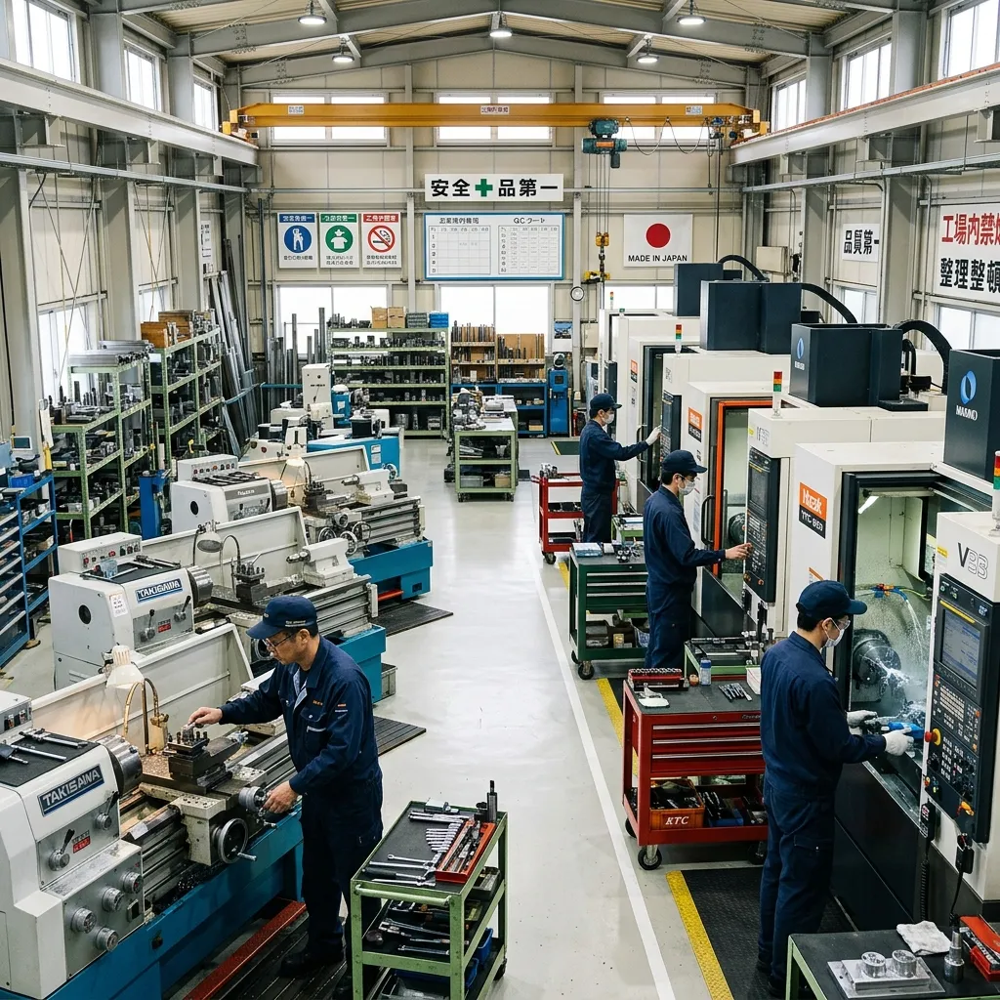
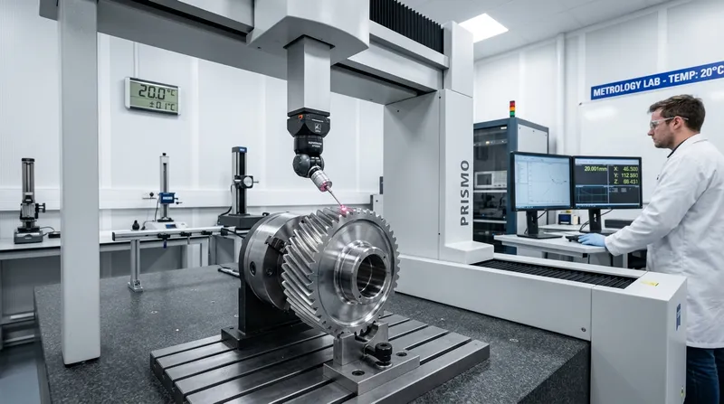
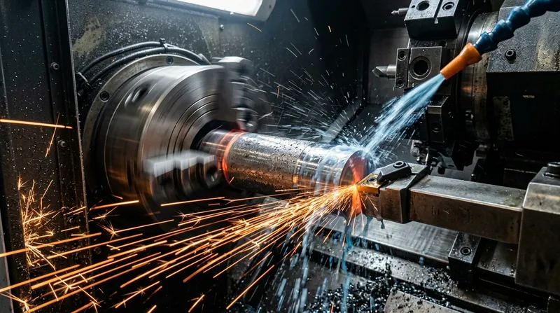
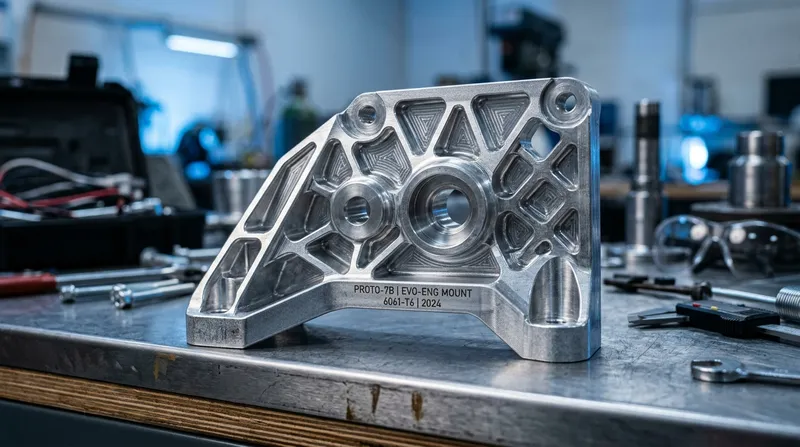
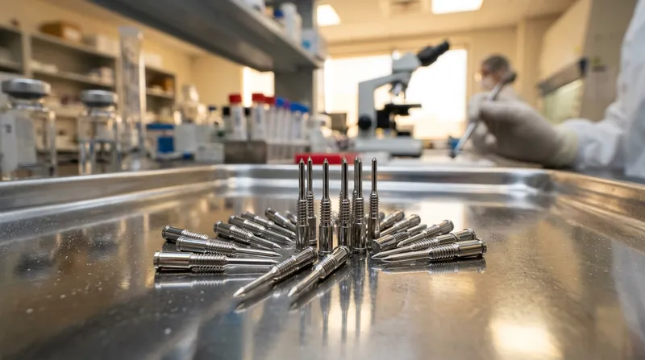
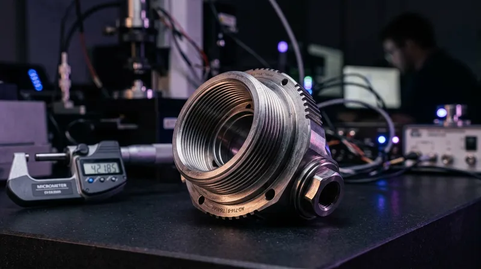
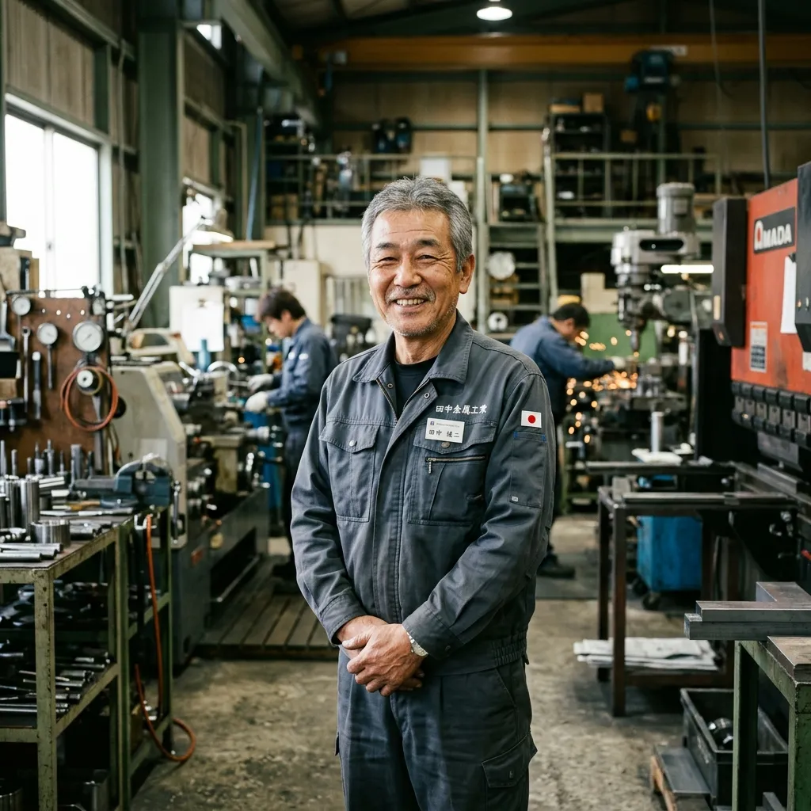

試作1個から量産まで。最新マシニング・NC旋盤と三次元測定機を備え、大田区で昭和53年から蓄積された職人歴40年のノウハウで、設計者・購買調達担当者の要求限界に応えます。
設計者の図面要求に即座に応えられるか、当社の材質・公差・加工限界を明確に提示します。
| 材質区分 | 代表的な鋼種・金属 | 加工公差限界 | 得意な形状・加工内容 / 技術的特徴 |
|---|---|---|---|
| アルミ合金 | A5052, A7075, A6061, A2017 | ±0.005mm | 肉厚0.5mmまでの極限薄肉切削や、3D曲面の高速削り出し。切削変形を抑えるための独自の熱応力対策冶具による精度管理を行います。 |
| ステンレス | SUS304, SUS316L, SUS430, SUS303 | ±0.008mm | 粘り気があり加工硬化しやすいSUS材の削り出し。極小ピンの微細加工（φ0.2mm〜）においてバリの発生を極限まで抑えた高クリーンパーツを提供。 |
| 難削材・チタン | 純チタン, 64チタン, インコネル, ハステロイ | ±0.010mm | 超硬コーティング工具とスピンドルスルークーラント（内部冷却）を活用。熱変位を極限まで抑え込み、航空宇宙・研究開発機器に必要な形状公差を実現します。 |
| 一般鋼・真鍮 | S45C, SCM440, SS400, C3604, 真鍮 | ±0.005mm | マシニング・NC旋盤の複合加工。熱処理前後の旋盤での寸法仕上げ。シャフト・同軸度の幾何公差をミクロン単位で保証。 |
| エンジニアプラスチック | POM(ジュラコン), PEEK, アクリル, MCナイロン | ±0.015mm | 熱膨張による寸法ズレを完全にコントロールするため、加工環境の温度変化を最小限に抑えた恒温管理での削り出しを行います。 |
防衛、航空宇宙、半導体、医療機器分野の機密図面を安全に管理するため、外部ネットワークと物理遮断された「データ加工室用PC」でのCADデータの処理を徹底。 ご依頼があれば**即日のNDA（秘密保持契約）締結**に対応し、お預かりしたデータの安全を確実に保証します。
当社の精密加工を支えるマシニング・NC旋盤のメーカー型番と、精度を証明する三次元測定機のスペックを公開します。
● 主要スペックとメーカー情報:
ファナック製ロボドリル等を主軸とした3台体制。高速高能率切削加工に対応し、3次元CAD/CAMデータをダイレクトに読み込んで高難度のアルミ切削、チタンブロックの削り出しを高い熱制御技術のもとで行います。

測定値の温度誤差を防ぐため、室温が常時20℃に管理された専用の品質検査室（恒温室）に設置。 平面度、同軸度、円筒度、直角度などの幾何公差を保証し、検査成績書（校正証明書対応）を発行します。

オークマ製高剛性NC旋盤を採用。ミーリング複合加工機（1台）により、外径旋削と軸方向・側面からのドリル・タップ穴加工をワンチャックで完了させ、チャック掛け替え時の同軸度ズレを完全に防ぎます。
| 設備名 | メーカー / 型番 | 仕様・加工範囲 (X/Y/Z) | 台数 |
|---|---|---|---|
| 立形マシニングセンタ | ファナック製 / ロボドリル等 | X: 700 / Y: 400 / Z: 330 mm (主軸12,000rpm) | 3台 |
| NC旋盤 | オークマ製 / LBシリーズ等 | 最大加工径 φ350mm × 最大長さ 500mm | 2台 |
| 複合加工機 (ミーリング対応) | オークマ製 / 複合ターニングセンタ | 対向2主軸・C軸制御（ワンチャック複合加工） | 1台 |
| 汎用フライス盤 | 静岡鐵工所製等 | 職人手動追加工・特急用荒取り・専用冶具製作 | 2台 |
| 汎用旋盤 | 滝澤鉄工所製等 | 試作の超短納期ブッシュ削り出し・小径シャフト用 | 1台 |
| CNC三次元測定機 | ミツトヨ製 / CRYSTA-Apex | X: 500 / Y: 700 / Z: 400 mm (20℃恒温管理室) | 1台 |
単なる加工部品の製品写真ではなく、「どのような困難な図面課題を、いかに克服したか」の技術ソリューション事例です。

大手メーカーの新型EV試作用パーツ。強度を保ちつつ限界まで軽量化するため、肉厚0.5mmという極小幅の薄肉削り出しが必要となりました。

超微細な検査液を吸い上げるための高精度SUS304製ピン。傷やミクロン単位の微細バリが一切許されないクリーンな機構パーツです。

大学宇宙研究機関の打ち上げロケット用チタン製アダプター。大気圏脱出時の激しいG・振動に耐える構造設計が求められました。
材質、公差、数量、納期を選択し、概算価格と納期をその場で瞬時にシミュレーションできます。
昭和53年に大田区の一角で父が旋盤1台からスタートした「豊穣金属製作所」。 それから45年以上にわたり技術を磨き続け、今では5軸などのデジタル制御機や恒温室付き三次元測定機を揃えるまでに成長しました。
加工機がどんなに進化しても、最後に図面通りの公差を出し切るために決定的な役割を果たすのは、職人の「目」と「手先の感覚」、精度への責任感です。 特に、アルミの薄肉加工時における内部応力の逃がし方や、チタンなどの難削材が発する熱の管理は、長年の実戦経験なくしては不可能です。
私たちは単なる下請け工場ではありません。 設計段階で「加工しやすい（コストを下げられる）形状への最適化」を提案する、エンジニアの最良のパートナーです。 「他社で削れないと断られた」図面こそ、私たちの出番です。

設計者・購買担当者からいただく、加工・取引に関する代表的な質問をまとめています。
STEP / DXF / PDF / ZIP対応。暗号化送信および厳重なデータ保管を保証します。
| 会社名 | 株式会社豊穣金属製作所 |
|---|---|
| 代表者 | 代表取締役 豊穣 昭雄 |
| 創業 | 1978年（昭和53年）10月 |
| 設立 | 1988年（昭和63年）4月（法人化） |
| 資本金 | 10,000,000円 |
| 従業員数 | 12名（技術者、職人、パートスタッフ含む） |
| 所在地 | 〒144-0044 東京都大田区本羽田2-3-4 |
| 事業内容 |
|
| 主要取引設備 |
|
| 主要取引先 | 〇〇精機株式会社、〇〇重工業株式会社、東京工業大学 研究室、他民間メーカー多数 |
| 主要取引銀行 | 城南信用金庫 羽田支店、さわやか信用金庫、みずほ銀行 |
〒144-0044 東京都大田区本羽田2-3-4
・京浜急行空港線「糀谷駅」より徒歩12分
・産業道路近く（トラック・資材搬入可能）
羽田空港、主要幹線道路からアクセス良好